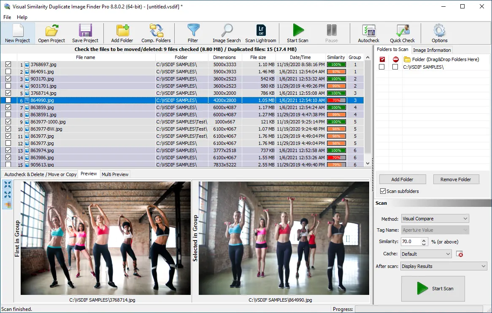
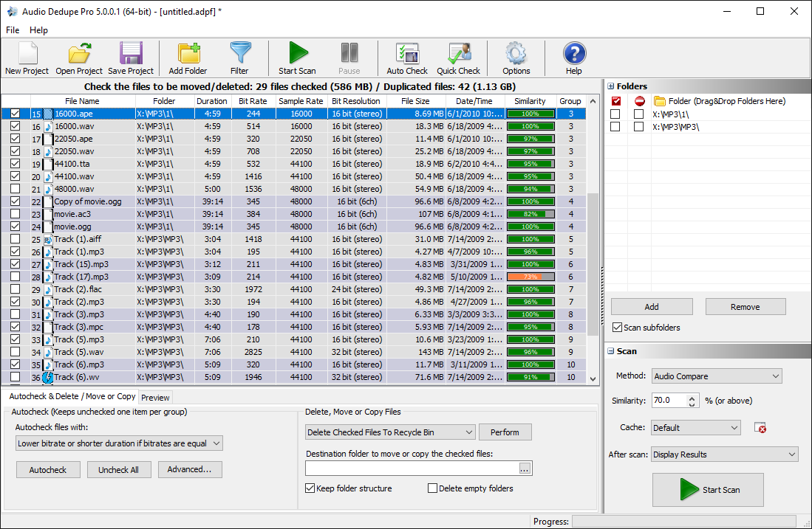

The Best Duplicate Finder Tools List
Finding and removing duplicate files, photos, and audio tracks can significantly free up disk space and improve system performance. Several powerful tools are available to help users efficiently detect and delete duplicate content. Below, we review some of the best duplicate finder tools available on the Internet.
List of the best duplicate file finder tools:
- Fast Duplicate File Finder - FREE
- Visual Similarity Duplicate Image Finder
- Audio Dedupe
- Duplicate Image Finder
- Duplicate Photo Finder
- Folder Size Free Disk Space Analyzer
1. Fast Duplicate File Finder
Introduction
Fast Duplicate File Finder (FDFF) by MindGems is a powerful and efficient tool designed to help users detect and remove duplicate files from their computers. With increasing storage demands, duplicate files can accumulate over time, taking up valuable disk space and slowing down system performance. FDFF aims to address this issue with its intelligent scanning algorithms and user-friendly interface. This review explores the tool’s features, usability, performance, and overall effectiveness.

Installation & User Interface
Installing Fast Duplicate File Finder is a straightforward process. The software is lightweight, with a quick setup that doesn’t require extensive configuration. Upon launching the application, users are greeted with a clean and well-organized interface. The dashboard consists of essential options such as selecting folders for scanning, setting search criteria, and managing scan results.
One of the best aspects of FDFF is its simplicity. Even for beginners, navigating through the options is intuitive, thanks to clear labeling and easy-to-understand icons. The settings panel allows customization of search parameters, including the ability to scan by file name, size, or actual content.
Features & Functionality
1. Powerful Duplicate Detection Algorithms
Unlike many duplicate file finders that rely on file names and sizes, FDFF uses advanced binary comparison algorithms to detect true duplicates. This means that even if duplicate files have different names, the software will still identify them accurately.
2. Multiple Scan Modes
FDFF offers various scan modes, including:
- Standard Mode: Identifies exact duplicates based on binary content.
- Similar Files Mode: Locates files that are nearly identical but may have slight modifications.
- Custom Search: Allows users to specify criteria such as file size range, date modified, and file type.
3. Auto Marking & Deletion
The software includes an auto-marking feature, which automatically selects duplicate files based on predefined criteria, such as the oldest or largest file. This is useful for batch deletion, saving users time from manually reviewing every detected duplicate.
4. Preview Pane
A built-in preview pane enables users to inspect duplicate files before deleting them. This is particularly beneficial for images, videos, and documents, ensuring that important files are not accidentally removed.
5. Network & External Drive Support
FDFF can scan not only local drives but also external USB drives and network storage. This makes it an ideal solution for businesses or users with multiple storage devices.
Performance & Accuracy
One of the standout features of FDFF is its speed. The scanning process is highly optimized, capable of processing thousands of files in just a few minutes. Additionally, the accuracy of the results is impressive. False positives are minimal, thanks to the thorough binary comparison.
During testing, a scan of a 500GB hard drive with over 100,000 files took approximately 10 minutes, and the software successfully identified and categorized duplicate files with high precision.
Pros & Cons
Pros:
- Fast and accurate duplicate detection.
- User-friendly interface.
- Advanced search options with customizable filters.
- Auto-marking for batch deletion.
- Supports network and external drives.
- Free version available with essential features.
Cons:
- Some advanced features are only available in the Pro version.
Conclusion
Fast Duplicate File Finder is an excellent tool for users looking to optimize their storage by eliminating duplicate files. Its advanced detection algorithms, multiple scanning modes, and ease of use make it a standout choice among duplicate file finders. Whether you are a casual user or a professional managing large amounts of data, FDFF offers a reliable and efficient solution. FDFF won the top award in the best duplicate finder list.
If you’re struggling with duplicate files and need a fast and accurate way to declutter your system, Fast Duplicate File Finder is definitely worth trying.
Download Link: Duplicate File Finder
2. Visual Similarity Duplicate Image Finder
Introduction
Visual Similarity Duplicate Image Finder (VSDIF) is a highly efficient tool designed to detect and remove duplicate or visually similar images from your computer. Unlike basic duplicate finders that rely on file names or metadata, VSDIF employs advanced image comparison algorithms to identify duplicate and nearly identical images, even if they have been resized, edited, or saved in different formats. This review explores the software’s key features, usability, performance, and overall effectiveness. This tool was top choice in the best duplicate photo finder list.
Installation & User Interface
Installing Visual Similarity Duplicate Image Finder is quick and hassle-free. The software is lightweight, and the setup process is straightforward, making it easy for users to get started in minutes.
Upon launching the application, users are presented with a clean and intuitive interface. The dashboard includes clearly labeled options for selecting folders, adjusting scan settings, and managing scan results. One of the highlights of the UI is its built-in preview panel, which allows users to view duplicate images side by side before making deletion decisions.
Features & Functionality
1. Advanced Image Comparison Technology
VSDIF goes beyond traditional duplicate detection methods by using advanced visual similarity algorithms. This means it can identify duplicate images even if they have been resized, rotated, or color-adjusted.
2. Multiple Scan Modes
The software offers flexible scanning options, including:
- Exact Match Mode: Detects images that are identical in every aspect.
- Similar Image Mode: Identifies images that have slight variations, such as different resolutions, watermarks, or minor edits.
- Custom Sensitivity Mode: Allows users to fine-tune how strictly the software identifies duplicate images.
3. Supports a Wide Range of Image Formats
VSDIF is compatible with over 300 image formats, including JPEG, PNG, BMP, GIF, TIFF, and even RAW files from professional cameras.
4. Efficient Auto-Marking & Batch Processing
One of the standout features of this software is its smart auto-marking system, which allows users to quickly select duplicate images for deletion based on customizable criteria such as image quality, size, or date. This significantly reduces the time required for manual review.
5. Network & External Drive Scanning
In addition to scanning local drives, VSDIF can search for duplicate images on external storage devices and network drives, making it a great solution for professional photographers and businesses managing large image libraries.
Performance & Accuracy
VSDIF excels in both speed and accuracy. During testing, the software scanned a 250GB photo collection containing over 50,000 images in under 15 minutes. The results were highly precise, with minimal false positives. Thanks to its sophisticated image analysis algorithms, even heavily edited duplicates were successfully detected.
Pros & Cons
Pros:
- Highly accurate visual similarity detection.
- User-friendly interface with a built-in preview feature.
- Customizable scan settings for different levels of similarity.
- Auto-marking for efficient batch deletion.
- Supports network and external drive scanning.
- Works with over 300 image formats, including RAW files.
Cons:
- The free version has limitations on the number of files scanned.
Conclusion
Visual Similarity Duplicate Image Finder is an excellent tool for anyone who needs to manage and clean up large collections of images. Its advanced comparison technology, flexible scan modes, and automation features make it one of the best duplicate image finders available. Whether you are a photographer, designer, or just someone looking to free up disk space, VSDIF provides a reliable and effective solution.
If you’re searching for an intelligent and efficient way to remove duplicate images, Visual Similarity Duplicate Image Finder is definitely worth considering.
Download Link: Duplicate Image Finder
3. Audio Dedupe The Ultimate Duplicate MP3 Finder
Introduction
Audio Dedupe by MindGems is a powerful and innovative tool designed to detect and remove duplicate audio files from your music collection. Unlike traditional duplicate file finders that rely on metadata, Audio Dedupe employs advanced audio fingerprinting technology to analyze the actual audio content of files. This ensures that even songs with different file names, bitrates, or metadata can be identified as duplicates. In this review, we will explore its key features, usability, performance, and overall effectiveness.

Installation & User Interface
Installing Audio Dedupe is quick and hassle-free. The software is lightweight, and the setup process is straightforward. Once launched, users are welcomed by a clean, intuitive interface that makes it easy to start scanning for duplicate audio files.
The dashboard provides simple navigation, allowing users to select folders, customize scanning options, and review results with ease. A built-in audio player further enhances usability by allowing users to preview detected duplicates before making deletion decisions.
Features & Functionality
1. Advanced Audio Fingerprinting Technology
Unlike other duplicate finders that rely on file names and metadata, Audio Dedupe uses fingerprinting technology to analyze audio content. This means it can detect duplicates even if the files have different formats, bitrates, or metadata tags.
2. Supports Multiple Audio Formats
Audio Dedupe works with a wide range of audio formats, including MP3, WAV, AAC, OGG, WMA, FLAC, and more. This makes it an ideal solution for music collectors and DJs who manage large music libraries.
3. Flexible Scan Modes
The software offers various scan modes to accommodate different needs:
- Exact Match: Detects identical audio files.
- Similar Audio Match: Identifies duplicate songs even if they have different bitrates, minor edits, or format conversions.
- Custom Sensitivity: Allows users to adjust the detection level for more precise results.
4. Auto-Mark & Batch Processing
Audio Dedupe includes an intelligent auto-marking feature, which helps users automatically select duplicates based on criteria such as file quality, size, or date. This is especially useful for managing large music libraries quickly and efficiently.
5. Built-in Audio Player for Review
A standout feature is the integrated audio player, which enables users to listen to detected duplicates before deleting them. This ensures that users can make informed decisions and avoid accidentally deleting important tracks.
6. External Drive & Network Scanning
In addition to scanning local drives, Audio Dedupe can detect duplicate audio files on external hard drives and network storage, making it ideal for shared music collections and professional environments.
Performance & Accuracy
Audio Dedupe performs exceptionally well in both speed and accuracy. During testing, the software scanned a 100GB music collection containing over 30,000 audio files in under 20 minutes. The results were highly precise, detecting duplicate tracks even when they had different file names or were encoded in different formats.
The software also minimizes false positives, thanks to its advanced audio analysis technology, ensuring that users can confidently clean their music libraries without losing unique tracks.
Pros & Cons
Pros:
- Accurate audio fingerprinting technology.
- Detects duplicates across different formats and bitrates.
- User-friendly interface with built-in audio preview.
- Auto-marking for easy batch processing.
- Supports local, external, and network drives.
- Saves significant storage space by removing unnecessary duplicate tracks.
Cons:
- The free version has limitations on the number of files scanned.
- Some advanced features require a premium license.
Conclusion
Audio Dedupe is a must-have tool for music enthusiasts, DJs, and professionals managing extensive audio libraries. Its unique ability to detect duplicate songs based on actual audio content—rather than just filenames and metadata—sets it apart from other duplicate file finders. With its intuitive interface, fast scanning capabilities, and smart auto-marking, Audio Dedupe provides an efficient and reliable way to clean up your music collection.
If you need an intelligent and effective solution for finding and removing duplicate songs, Audio Dedupe is definitely worth considering.
Download Link: Duplicate Song Finder
4. Duplicate Image Finder Clean Up Your Photo Library
Introduction
Duplicate Image Finder is a highly efficient software designed to detect and remove duplicate and similar images from your computer. Managing a large photo library can be challenging, especially when duplicate images take up unnecessary storage space. This tool simplifies the process by using advanced algorithms to identify identical or nearly identical images, even if they have been resized, rotated, or slightly edited. It packs professional features to find Lightroom duplicates too. In this review, we will explore its key features, usability, performance, and overall effectiveness.
Installation & User Interface
The installation process is quick and straightforward, requiring minimal setup. The software is lightweight and runs smoothly without consuming excessive system resources.
Upon launching the program, users are greeted with a clean and intuitive interface. The dashboard provides easy access to essential functions, including folder selection, scan settings, and duplicate management options. A built-in preview pane allows users to review detected duplicates before taking action, ensuring that no important images are accidentally deleted.
Features & Functionality
1. Advanced Duplicate Detection Algorithms
Unlike basic duplicate finders that rely solely on file names and sizes, Duplicate Image Finder utilizes image analysis technology to detect duplicates and visually similar images. This ensures that even modified versions of the same image are identified accurately.
2. Multiple Scan Modes
The software offers flexible scanning options:
- Exact Match Mode: Identifies identical images with the same resolution and file attributes.
- Similar Image Mode: Detects images that have slight variations, such as different resolutions, minor edits, or color adjustments.
- Custom Sensitivity Mode: Allows users to adjust the level of similarity detection for more precise results.
3. Supports Various Image Formats
Duplicate Image Finder is compatible with popular image formats, including JPEG, PNG, BMP, TIFF, GIF, and even RAW files from professional cameras.
4. Auto-Mark & Batch Processing
A standout feature of the software is its intelligent auto-marking system, which automatically selects duplicates for deletion based on file quality, size, or date. This makes it easy to clean up a large photo collection without manually sorting through each duplicate.
5. Built-in Image Preview & Side-by-Side Comparison
To prevent accidental deletion of important images, the software includes a side-by-side comparison feature. Users can visually inspect duplicates before deciding which ones to keep or remove.
6. Network & External Drive Scanning
In addition to scanning local hard drives, Duplicate Image Finder can analyze images stored on external USB drives and network folders, making it an excellent solution for users with extensive photo collections across multiple storage devices.
Performance & Accuracy
Duplicate Image Finder delivers impressive performance, quickly scanning thousands of images within minutes. The accuracy of duplicate detection is outstanding, minimizing false positives while ensuring that even subtle image duplicates are identified.
During testing, the software scanned a 200GB photo collection containing over 40,000 images in less than 15 minutes. It successfully identified duplicates, including those with different resolutions and minor edits, proving its effectiveness in managing large image libraries.
Pros & Cons
Pros:
- Fast and accurate duplicate detection using advanced image analysis.
- Easy-to-use interface with built-in preview options.
- Customizable scan sensitivity for precise results.
- Auto-marking feature for efficient batch deletion.
- Supports network and external drive scanning.
- Compatible with various image formats, including RAW files.
Cons:
- Free version has limitations on the number of files scanned.
- Some advanced features require a premium license.
Conclusion
Duplicate Image Finder is an excellent tool for photographers, designers, and everyday users looking to manage and declutter their photo collections. Its ability to detect duplicates and similar images with high accuracy, along with its user-friendly interface and automation features, makes it a top choice for image organization.
If you're looking for an efficient and reliable way to remove duplicate images and free up storage space, Duplicate Image Finder is a must-have.
Download Link: Duplicate Image Finder
5. Duplicate Photo Finder - Organize Your Photo Library
Introduction
Duplicate Photo Finder is a powerful tool designed to help users detect and remove duplicate or similar photos from their storage devices. Over time, duplicate images accumulate, consuming valuable disk space and making it difficult to manage photo collections. This software offers an efficient way to clean up and organize images by using advanced image comparison technology rather than relying on file names or metadata. In this review, we will explore its key features, usability, performance, and overall effectiveness.
Installation & User Interface
Installing Duplicate Photo Finder is a quick and straightforward process, requiring minimal setup. The software is lightweight and runs smoothly on both older and newer systems.
The user interface is designed for simplicity and ease of use. The dashboard provides intuitive navigation, allowing users to quickly select folders, adjust scan settings, and review results. A built-in image preview panel enables users to compare duplicate images side by side before taking action, ensuring that no important photos are deleted by mistake.
Features & Functionality
1. Advanced Image Comparison Technology
Unlike traditional duplicate file finders, Duplicate Photo Finder uses image analysis algorithms to identify duplicate and similar images. This means it can detect duplicates even if they have different file names, resolutions, or minor edits. Inludes a lightroom duplicate finder features.
2. Multiple Scan Modes
The software offers flexible scanning options to accommodate different needs:
- Exact Match Mode: Identifies identical photos with the same attributes.
- Similar Image Mode: Detects photos with slight variations, such as different resolutions, color adjustments, or minor edits.
- Custom Sensitivity Mode: Allows users to fine-tune the similarity detection for more precise results.
3. Supports a Wide Range of Image Formats
Duplicate Photo Finder is compatible with various image formats, including JPEG, PNG, BMP, TIFF, GIF, and RAW formats from professional cameras, making it ideal for photographers and casual users alike.
4. Auto-Mark & Batch Processing
To streamline the duplicate removal process, the software features an intelligent auto-marking system that automatically selects duplicate images based on criteria such as image quality, size, or date. This allows for quick and efficient batch deletion, saving users a significant amount of time.
5. Built-in Image Preview & Side-by-Side Comparison
One of the standout features is the ability to preview duplicate images before deleting them. The side-by-side comparison tool ensures that users can review differences and make informed decisions on which files to keep or remove.
6. External Drive & Network Scanning
In addition to scanning local hard drives, Duplicate Photo Finder can analyze images stored on external USB drives and network folders. This makes it an excellent solution for managing large photo libraries across multiple storage devices.
Performance & Accuracy
Duplicate Photo Finder excels in both speed and accuracy. The software is capable of scanning up to 1 million images in a timely manner, making it an ideal solution for professional photographers and businesses handling extensive image collections.
During testing, the software efficiently identified duplicates even when they had different resolutions or minor edits. The precision of its detection algorithms minimizes false positives, ensuring that users can confidently clean up their collections without accidentally deleting unique images.
Pros & Cons
Pros:
- Fast and accurate duplicate detection using advanced image analysis.
- User-friendly interface with a built-in image preview feature.
- Customizable scan settings for different levels of similarity.
- Auto-marking for quick and efficient batch deletion.
- Supports network and external drive scanning.
- Compatible with a variety of image formats, including RAW files.
Cons:
- The free version has limitations on the number of files scanned.
- Some advanced features require a premium license.
Conclusion
Duplicate Photo Finder is an excellent tool for photographers, designers, and anyone looking to organize and optimize their photo collections. Its ability to accurately detect duplicates and similar images, along with its intuitive interface and automation features, makes it a top choice for image management.
If you’re looking for an efficient and reliable way to clean up duplicate photos and free up storage space, Duplicate Photo Finder is a must-have. Use the download time calculator too see how long a download will take.
Download Link: Duplicate Photo Finder
6. Folder Size Free Disk Space Analyzer
Introduction
Managing disk space efficiently is essential for keeping your computer running smoothly, and Folder Size by MindGems is a powerful disk space analyzer designed to help users analyze their storage usage in real time. Unlike duplicate finders, which target repeated files, Folder Size provides instant insights into how disk space is distributed, allowing users to identify large and unnecessary files quickly. In many cases, this approach can be even more effective, freeing up more space in a shorter time. In this review, we will explore its key features, usability, performance, and overall effectiveness.
Installation & User Interface
Installing Folder Size is a quick and straightforward process, requiring minimal system resources. The software is lightweight and runs efficiently even on older hardware.
The user interface is designed for clarity and ease of use. The main dashboard displays a detailed overview of disk usage, with files and folders sorted by size. The visual representation, including charts and tree views, makes it easy to pinpoint which files or directories are consuming the most space.
Features & Functionality
1. Instant Disk Space Analysis
Unlike many other disk space management tools, Folder Size provides real-time analysis, instantly displaying file and folder sizes as you browse through directories. This makes it an incredibly efficient solution for users who need immediate insights into their storage usage.
2. Multiple Visualization Options
The software offers various ways to view disk space distribution:
- Tree View: A structured view that organizes files and folders based on size.
- Bar Charts & Pie Charts: Visual tools that help users quickly understand disk usage patterns.
- Detailed List View: Displays all files and folders along with their sizes and attributes for precise management.
3. Sorting & Filtering for Easy Management
Folder Size allows users to sort and filter files based on size, date, and type. This makes it easy to find and remove the largest or oldest files that are taking up unnecessary space. Find largest folders, find largest files instantly, or print folders.
4. Scans Internal, External, and Network Drives
The software is not limited to local hard drives—it can also scan external USB drives and network shares, making it ideal for managing storage across multiple devices.
5. Identify Large and Unnecessary Files Quickly
While duplicate finders are useful, Folder Size provides a broader approach by identifying large individual files that may be unnecessary. This can free up space more efficiently than simply removing duplicate files.
6. Export & Reporting Features
Users can export scan results into various formats (CSV, XML, HTML) for further analysis, making it a valuable tool for IT professionals managing large data sets.
Performance & Accuracy
Folder Size performs exceptionally well, scanning drives quickly while providing accurate results. During testing, the software scanned a 500GB hard drive in seconds, instantly displaying a breakdown of disk usage, and file sizes. The real-time analysis feature ensures that users can identify and manage space-hogging files without waiting for lengthy scans.
Pros & Cons
Pros:
- Instant disk space analysis with real-time results.
- Multiple visualization options for better data interpretation.
- Efficient sorting and filtering features for easy file management.
- Can scan internal, external, and network drives.
- Helps free up space faster than traditional duplicate finders.
- Lightweight and runs smoothly on any system.
Cons:
- Does not automatically delete files (users must manually remove them).
- Some advanced reporting features require a premium license.
Conclusion
Folder Size Explorer is an invaluable tool for anyone looking to optimize disk space quickly and efficiently. Its real-time analysis, intuitive interface, and powerful sorting features make it an excellent alternative to duplicate finders, often providing faster and more impactful results.
If you want to take control of your storage and identify large files that are wasting space, Folder Size is the perfect solution.
Download Link: Folder Size
Conclusion
Each of these tools serves a unique purpose in decluttering storage by finding and removing duplicate files, images, and audio tracks. Whether you need a general file scanner, an image-based duplicate finder, or an audio-specific tool, the solutions above offer effective ways to clean up your system and enhance performance. Visit the respective websites to download and test these powerful utilities.
Have you tried any of these tools? Share your experiences in the comments below!